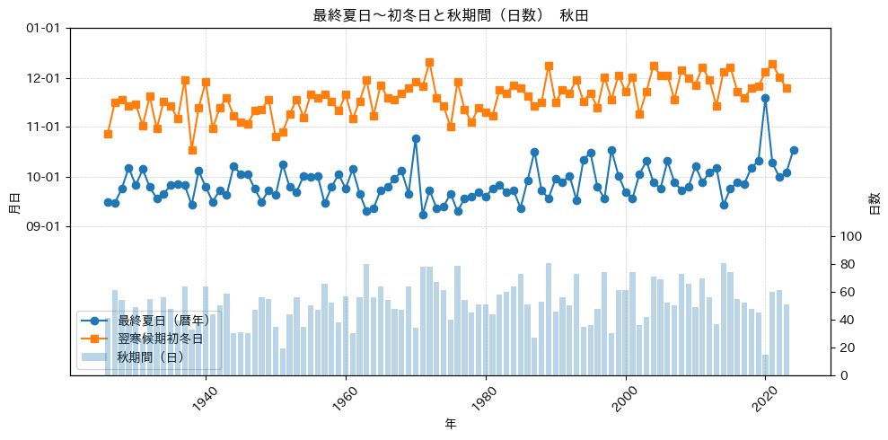

%load_ext autoreload
%autoreload 2
from meteo_lib import PROJECT # または: from meteo_lib.paths import PROJECT
from meteo_lib.my_path_utils import DATA, OUT
import meteo_lib.meteo_lib as ml
from meteo_lib.my_path_utils import DATA, OUT
import pandas as pd
import numpy as np
from pathlib import Path
from typing import Any, Optional, Tuple
from functools import lru_cache
import time
import matplotlib.pyplot as plt
#import japanize_matplotlib
from matplotlib.dates import DateFormatter
import datetime as dt
import matplotlib.dates as mdates
import matplotlib as mpl
mpl.rcParams["font.family"] = "IPAexGothic" # 例：Noto Sans CJK JP でも可
mpl.rcParams["axes.unicode_minus"] = False # －が豆腐になるのを回避
# 保存時の文字化け対策（必要なら）
mpl.rcParams["pdf.fonttype"] = 42
mpl.rcParams["ps.fonttype"] = 42# 複数年のJMAデータを取得してひとつのDataFrameにまとめる
def make_multi_year_daily_tables_jma(
*,
prec: int,
block: int,
start_year: int,
end_year: int,
months = range(1, 13),
day: int = 1, # JMAの「日別」は月表を返すので 1 固定でOK（関数シグネチャに合わせて渡す）
sleep_sec: float = 0.8, # 取得間隔（マナー＆弾かれ防止）
max_retries: int = 3, # 月単位取得のリトライ回数
drop_feb29: bool = True, # うるう日を揃えたい場合は True
# out_dir: str = "out_csv",
prefix: str = "daily"
) -> dict[str, pd.DataFrame]:
Path(OUT).mkdir(parents=True, exist_ok=True)
frames = []
value_cols = ['平均気温', '最高気温', '最低気温']
for year in range(start_year, end_year + 1):
for month in months:
last_err = None
for trial in range(1, max_retries + 1):
try:
df_m = ml.getDailyData(prec, block, year, month, day)
df_m = df_m.reset_index(names='日時')
print(df_m)
# 必須列チェック
# needed = ['年月日'] + value_cols
needed = ['日時'] + value_cols
missing = [c for c in needed if c not in df_m.columns]
if missing:
raise ValueError(f"get_DailyDataの戻り値に欠落列: {missing}")
# 型そろえ
df_m = df_m[['日時'] + value_cols].copy()
df_m['日時'] = pd.to_datetime(df_m['日時'], errors='coerce')
for c in value_cols:
df_m[c] = pd.to_numeric(df_m[c], errors='coerce')
frames.append(df_m)
break # 成功
except Exception as e:
last_err = e
if trial < max_retries:
time.sleep(sleep_sec)
continue
# リトライ尽きた
raise RuntimeError(f"JMA取得失敗: year={year}, month={month} ({e})") from e
time.sleep(sleep_sec) # 次の月へ
# 全結合と整形
df = pd.concat(frames, ignore_index=True)
df = df.dropna(subset=['日時']) # 日付欠損は除外
df = df.sort_values('日時')
df = df[~df['日時'].duplicated(keep='first')]
if drop_feb29:
md = df['日時']
df = df[~((md.dt.month == 2) & (md.dt.day == 29))]
# インデックス化（以降の処理が楽）
df = df.set_index('日時')
# datetime列を残したまま保存
df_out = df[value_cols].copy()
df_out.insert(0, '日時', df.index) # indexを列に戻す
df_out = df_out.reset_index(drop=True).sort_values('日時')
out_path = Path(out_dir) / f"{prefix}_{start_year}-{end_year}.csv"
df_out.to_csv(out_path, index=False, encoding='utf-8-sig')
# --- 年ごとの辞書を生成 ---
by_year = {}
for y, g in df_out.groupby(df_out['日時'].dt.year):
by_year[int(y)] = g.reset_index(drop=True)
out = {
'daily': df_out,
'by_year': by_year
}
return out# 1) 共通ヘルパ：辞書/DFを単一DataFrameに正規化
def _to_daily_df(res: Any) -> pd.DataFrame:
if isinstance(res, dict):
if 'daily' in res:
df = res['daily'].copy()
elif 'by_year' in res:
df = pd.concat(res['by_year'].values(), ignore_index=True)
else: # {year: df}
df = pd.concat(res.values(), ignore_index=True)
elif isinstance(res, pd.DataFrame):
df = res.copy()
else:
raise TypeError("res は {'daily':df} / {'by_year':{年:df}} / {年:df} / DataFrame を想定")
if not pd.api.types.is_datetime64_any_dtype(df['日時']):
df['日時'] = pd.to_datetime(df['日時'], errors='coerce')
for c in ('最高気温','最低気温','平均気温'):
if c in df.columns:
df[c] = pd.to_numeric(df[c], errors='coerce')
return df.dropna(subset=['日時']).sort_values('日時').reset_index(drop=True)
# 2) 夏（暦年）サマリー
def summarize_summer_calendar(
res: Any,
*,
summer_threshold: float = 25.0, # 夏日の閾値
midsummer_threshold: float = 30.0, # 真夏日の閾値
exhotday_threshold: float = 35.0, # 猛暑日の閾値
start_year: Optional[int] = None,
end_year: Optional[int] = None
) -> pd.DataFrame:
df = _to_daily_df(res)
df['年'] = df['日時'].dt.year
if start_year is None: start_year = int(df['年'].min())
if end_year is None: end_year = int(df['年'].max())
is_summer = df['最高気温'] >= summer_threshold
first_ = df.loc[is_summer].groupby('年')['日時'].min().rename('初夏日')
last_ = df.loc[is_summer].groupby('年')['日時'].max().rename('最終夏日')
cnt = is_summer.groupby(df['年']).sum().astype(int).rename('夏日日数')
is_midsummer = df['最高気温'] >= midsummer_threshold
mid_first_ = df.loc[is_midsummer].groupby('年')['日時'].min().rename('初真夏日')
mid_last_ = df.loc[is_midsummer].groupby('年')['日時'].max().rename('最終真夏日')
mid_cnt = is_midsummer.groupby(df['年']).sum().astype(int).rename('真夏日日数')
is_exsummer = df['最高気温'] >= exhotday_threshold
ex_first_ = df.loc[is_exsummer].groupby('年')['日時'].min().rename('初猛暑日')
ex_last_ = df.loc[is_exsummer].groupby('年')['日時'].max().rename('最終猛暑日')
ex_cnt = is_exsummer.groupby(df['年']).sum().astype(int).rename('猛暑日日数')
idx = pd.Index(range(start_year, end_year + 1), name='年')
out = pd.concat([first_, cnt, last_,
mid_first_, mid_last_, mid_cnt,
ex_first_, ex_last_, ex_cnt], axis=1).reindex(idx)
out['初夏日_DOY'] = out['初夏日'].dt.dayofyear
out['最終夏日_DOY'] = out['最終夏日'].dt.dayofyear
# print(out)
return (out.reset_index()
.loc[:, ['年','初夏日','初夏日_DOY','夏日日数','最終夏日','最終夏日_DOY',
'初真夏日', '最終真夏日', '真夏日日数',
'初猛暑日', '最終猛暑日', '猛暑日日数']])
# 3) 冬（寒候期：前年10/1〜当年3/31、ラベル=“1月を含む年”）
def summarize_winter_coldseason(
res: Any,
*,
winter_threshold: float = 0.0, # <0℃（0℃を含めるなら inclusive_zero=True）
inclusive_zero: bool = False, # True で <=0℃ を冬日に
cold_start: Tuple[int,int] = (10,1), # 前年10/1〜
cold_end: Tuple[int,int] = (4,30), # 当年4/01
start_csyear: Optional[int] = None, # 出力レンジ（“1月を含む年”）
end_csyear: Optional[int] = None,
blank_first_initial: bool = True,
blank_last_final: bool = True
) -> pd.DataFrame:
df = _to_daily_df(res)
s_m, s_d = cold_start; e_m, e_d = cold_end
# その日が属する“寒候期年”（1月を含む年）を付与
def cs_year(ts: pd.Timestamp):
m, d, y = ts.month, ts.day, ts.year
if (m > s_m) or (m == s_m and d >= s_d): # 前年側 → 翌年ラベル
return y + 1
if (m < e_m) or (m == e_m and d <= e_d): # 当年側 → 当年ラベル
return y
return pd.NA
df['寒候期年'] = df['日時'].apply(cs_year)
valid = df['寒候期年'].dropna().astype(int)
if valid.empty:
return pd.DataFrame(columns=['寒候期年','初冬日','初冬日_DOY',
'最終冬日','最終冬日_DOY',
'初真冬日','最終真冬日'])
if start_csyear is None: start_csyear = int(valid.min())
if end_csyear is None: end_csyear = int(valid.max())
idx = pd.Index(range(start_csyear, end_csyear + 1), name='寒候期年')
in_cs = df['寒候期年'].notna()
is_winter = (df['最低気温'] <= winter_threshold) if inclusive_zero else (df['最低気温'] < winter_threshold)
is_mid_winter = (df['最高気温'] <= winter_threshold) if inclusive_zero else (df['最高気温'] < winter_threshold)
first_ = df.loc[in_cs & is_winter].groupby('寒候期年')['日時'].min().rename('初冬日')
last_ = df.loc[in_cs & is_winter].groupby('寒候期年')['日時'].max().rename('最終冬日')
# cnt = ((in_cs & is_winter).groupby(df['寒候期年']).sum().astype('Int64').rename('冬日日数'))
mid_first_ = df.loc[in_cs & is_mid_winter].groupby('寒候期年')['日時'].min().rename('初真冬日')
mid_last_ = df.loc[in_cs & is_mid_winter].groupby('寒候期年')['日時'].max().rename('最終真冬日')
# mid_cnt = ((in_cs & is_mid_winter).groupby(df['寒候期年']).sum().astype('Int64').rename('真冬日日数'))
# out = pd.concat([first_, cnt, last_, mid_first_, mid_cnt, mid_last_ ], axis=1).reindex(idx)
out = pd.concat([first_, last_, mid_first_, mid_last_ ], axis=1).reindex(idx)
out['初冬日_DOY'] = out['初冬日'].dt.dayofyear
out['最終冬日_DOY'] = out['最終冬日'].dt.dayofyear
out = (out.reset_index()
.loc[:, ['寒候期年','初冬日','初冬日_DOY','最終冬日','最終冬日_DOY',
'初真冬日','最終真冬日']])
# 端年度のブランク指定
if not out.empty:
if blank_first_initial:
out.loc[out.index[0], ['初冬日','初冬日_DOY']] = [pd.NaT, pd.NA]
if blank_last_final:
out.loc[out.index[-1], ['最終冬日','最終冬日_DOY']] = [pd.NaT, pd.NA]
return out
# 3.5) 冬（寒候期：前年10/1〜当年3/31、ラベル=“1月を含む年”）
# 冬日日数、真冬日日数は暦年でカウント
def summarize_winter_calendar(
res: Any,
*,
winter_threshold: float = 0.0, # <0℃（inclusive_zero=True なら <=0℃）
inclusive_zero: bool = False,
start_year: Optional[int] = None,
end_year: Optional[int] = None,
) -> pd.DataFrame:
df = _to_daily_df(res)
# ★ これが無くて KeyError: '年' が出ていた
df['年'] = df['日時'].dt.year
if start_year is None:
start_year = int(df['年'].min())
if end_year is None:
end_year = int(df['年'].max())
idx = pd.Index(range(start_year, end_year + 1), name='年')
if inclusive_zero:
is_winter = df['最低気温'] <= winter_threshold # 冬日：最低気温
is_mid_winter = df['最高気温'] <= winter_threshold # 真冬日：最高気温
else:
is_winter = df['最低気温'] < winter_threshold
is_mid_winter = df['最高気温'] < winter_threshold
cnt = is_winter.groupby(df['年']).sum().astype('Int64').rename('冬日日数') # 暦年
mid_cnt = is_mid_winter.groupby(df['年']).sum().astype('Int64').rename('真冬日日数') # 暦年
out = pd.concat([cnt, mid_cnt], axis=1).reindex(idx, fill_value=0).astype('Int64')
return out.reset_index()
# 4) 結合：年（暦年）と寒候期年を突き合わせ＆自動補完
def combine_summer_winter(summer_df: pd.DataFrame, winter_df: pd.DataFrame,
winter_cnt_df: pd.DataFrame) -> pd.DataFrame:
merged = pd.merge(
summer_df, winter_df, left_on='年', right_on='寒候期年', how='outer'
)
# 年の補完（夏 or 冬のどちらかにしか無い年を救う）
if '年' in merged.columns and '寒候期年' in merged.columns:
merged['年'] = merged['年'].astype('Int64')
merged['寒候期年'] = merged['寒候期年'].astype('Int64')
merged['年'] = merged['年'].fillna(merged['寒候期年'])
merged = merged.drop(columns=['寒候期年'])
merged = pd.merge(
merged, winter_cnt_df, left_on='年', right_on='年', how='outer'
)
cols = ['年','初夏日','初夏日_DOY','夏日日数','最終夏日','最終夏日_DOY',
'初真夏日', '真夏日日数', '最終真夏日', '初猛暑日', '猛暑日日数', '最終猛暑日',
'初冬日','初冬日_DOY','冬日日数','最終冬日','最終冬日_DOY',
'初真冬日','真冬日日数','最終真冬日']
return (merged[[c for c in cols if c in merged.columns]]
.sort_values('年').reset_index(drop=True))
def add_gaps_for_summary(summary: pd.DataFrame) -> pd.DataFrame:
"""
summary（combine_summer_winter_tables の出力を想定）に3列を追加:
- '最終夏日→翌寒候期初冬日_すき間(日)'
- '初冬日→最終冬日(同寒候期)_すき間(日)'
- '初夏日→最終夏日(同暦年)_すき間(日)'
いずれも端点除外（差の日数から1を引く）。欠損 or 差が負なら NA。
"""
df = summary.copy().sort_values('年').reset_index(drop=True)
def gap_exclusive(later, earlier):
if pd.isna(later) or pd.isna(earlier):
return pd.NA
d = (later - earlier).days - 1
return d if d >= 0 else pd.NA
# 1) 春期間（最終冬日〜初夏日）
df['春期間'] = (df['初夏日'] - df['最終冬日']).dt.days - 1
# 2) 夏期間（初夏日→最終夏日）
df['夏期間'] = [
gap_exclusive(row['最終夏日'], row['初夏日']) for _, row in df.iterrows()
]
# 3) 秋期間（最終夏日〜翌寒候期の初冬日）（例: 1961年は 1962行の初冬日＝1961-11-14 を使用）
next_season_first_winter = df['初冬日'].shift(-1) # Y+1 シーズンの初冬日
df['秋期間'] = [
gap_exclusive(nfw, ls) for nfw, ls in zip(next_season_first_winter, df['最終夏日'])
]
# 4) 冬期間（初冬日→最終冬日（同一寒候期））
df['冬期間'] = [
gap_exclusive(row['最終冬日'], row['初冬日']) for _, row in df.iterrows()
]
return df
# 5) 取得→サマリー→結合を1発で（冬のため開始年-1で自動取得）
def build_summary_for_place(
*, pref: str, place: str, start_year: int, end_year: int,
summer_threshold: float = 25.0,
midsummer_threshold: float = 30.0,
exhotday_threshold: float = 35.0,
winter_threshold: float = 0.0,
inclusive_zero: bool = False,
cold_start=(10,1), cold_end=(3,31)
) -> pd.DataFrame:
info = ml.getBlock(pref, place)
prec, block = info['prec'], info['block']
# ★ キャッシュ経路：前年Q4も含めて取得
res = build_daily_with_cache(
prec=prec, block=block,
start_year=start_year, end_year=end_year,
fetch_func=ml.get_DailyData,
need_prev_year_for_coldseason=True
)
summer = summarize_summer_calendar(
res, summer_threshold=summer_threshold,
midsummer_threshold=midsummer_threshold,
exhotday_threshold=exhotday_threshold,
start_year=start_year, end_year=end_year
)
winter = summarize_winter_coldseason(
res, winter_threshold=winter_threshold, inclusive_zero=inclusive_zero,
cold_start=cold_start, cold_end=cold_end,
start_csyear=start_year, end_csyear=end_year,
blank_first_initial=True, blank_last_final=True
)
winter_cnt = summarize_winter_calendar(
res, winter_threshold=winter_threshold, inclusive_zero=inclusive_zero,
start_year=start_year, end_year=end_year,
)
summary = combine_summer_winter(summer, winter, winter_cnt)
# ここでギャップ列を追加
summary = add_gaps_for_summary(summary)
return summary# =========================
# JMA 高速ローダ（キャッシュ付）
# - 月次Parquetキャッシュ
# - dtype固定（float32）
# - 並列読み込み（ローカルParquetのみ）
# =========================
from __future__ import annotations
from pathlib import Path
from concurrent.futures import ThreadPoolExecutor, as_completed
import time
import pandas as pd
import numpy as np
import os
# ---- 設定 ----
CACHE_DIR = Path("jma_cache_parquet") # キャッシュのルート
PARQUET_COMPRESSION = None # 実行時に zstd/snappy を選ぶ（Noneで自動）
# ---- 圧縮方式の自動選択 ----
def _choose_parquet_compression() -> str:
# pyarrowがzstdをサポートしていなければsnappyへ
# 失敗したら非圧縮（None）にフォールバック
try:
import pyarrow
from pyarrow import codec
# 新旧でAPIが異なるので雑にtry
for name in ("zstd", "ZSTD"):
try:
codec.is_available(name)
return "zstd"
except Exception:
pass
return "snappy"
except Exception:
return None
if PARQUET_COMPRESSION is None:
PARQUET_COMPRESSION = _choose_parquet_compression()
# ---- ヘルパ：月ファイルのパス ----
def _month_cache_path(prec: int, block: int, year: int, month: int) -> Path:
return CACHE_DIR / f"{prec}_{block}" / f"{year:04d}" / f"{year:04d}-{month:02d}.parquet"
# ---- 型そろえ（高速I/O向けに軽量dtypeで統一）----
DTYPE_MAP = {
"平均気温": "float32",
"最高気温": "float32",
"最低気温": "float32",
}
DATE_COL = "日時"
VALUE_COLS = ["平均気温", "最高気温", "最低気温"]
def _coerce_daily_df(df: pd.DataFrame) -> pd.DataFrame:
df = df[[DATE_COL] + VALUE_COLS].copy()
# 既にdatetimeなら速い・未変換ならformat指定で高速化
if not pd.api.types.is_datetime64_any_dtype(df[DATE_COL]):
df[DATE_COL] = pd.to_datetime(df[DATE_COL], format="%Y-%m-%d", errors="coerce")
for c in VALUE_COLS:
df[c] = pd.to_numeric(df[c], errors="coerce").astype(DTYPE_MAP[c])
df = df.dropna(subset=[DATE_COL]).sort_values(DATE_COL).reset_index(drop=True)
return df
# ---- 1ヶ月取得＋キャッシュ保存（未キャッシュ時のみ）----
def load_month_cached(prec: int, block: int, year: int, month: int,
fetch_func,
*, force_refresh: bool = False,
polite_sleep_sec: float = 0.8,
max_retries: int = 3) -> pd.DataFrame:
"""
fetch_func(prec, block, year, month, day) -> DataFrame
未キャッシュなら取得→Parquet保存、既にあれば読み込みのみ。
"""
path = _month_cache_path(prec, block, year, month)
path.parent.mkdir(parents=True, exist_ok=True)
if path.exists() and not force_refresh:
# Parquetは型保持のため超速
return pd.read_parquet(path)
last_err = None
for trial in range(1, max_retries + 1):
try:
# JMAは月表を day=1 で取得する実装を想定
df_m = fetch_func(prec, block, year, month, 1)
df_m = df_m.reset_index(names="日時")
df_m = _coerce_daily_df(df_m)
df_m.to_parquet(path, index=False, compression=PARQUET_COMPRESSION)
return df_m
except Exception as e:
last_err = e
if trial < max_retries:
time.sleep(polite_sleep_sec)
continue
raise RuntimeError(f"月データ取得失敗: {year}-{month:02d} ({e})") from e
# 到達しないはず
raise last_err # noqa
# ---- 期間読み込み（キャッシュ優先、未キャッシュのみ取得）----
def make_multi_year_cached(prec: int, block: int,
start_year: int, end_year: int,
fetch_func,
*, drop_feb29: bool = True,
parallel_read: bool = True,
max_workers: int | None = None) -> pd.DataFrame:
"""
指定期間の全月を用意（キャッシュがあれば読む／無ければ取得・保存）。
読み込み段階はParquetを並列で読むことで高速化（ネット取得は逐次）。
"""
# まずファイルの存在を調べ、未キャッシュ分だけ順次取得して保存
tasks = []
for y in range(start_year, end_year + 1):
for m in range(1, 13):
p = _month_cache_path(prec, block, y, m)
tasks.append((y, m, p))
# 未キャッシュを先に取得（逐次＝礼儀）
for (y, m, p) in tasks:
if not p.exists():
_ = load_month_cached(prec, block, y, m, fetch_func, force_refresh=False)
# ここまで来たら全月がParquetで存在 → 並列で読み込む
def _read_parquet(pth: Path) -> pd.DataFrame:
return pd.read_parquet(pth)
frames: list[pd.DataFrame] = []
if parallel_read:
if max_workers is None:
max_workers = min(32, (os.cpu_count() or 4))
with ThreadPoolExecutor(max_workers=max_workers) as ex:
futs = {ex.submit(_read_parquet, p): (y, m) for (y, m, p) in tasks}
for fu in as_completed(futs):
df_m = fu.result()
frames.append(df_m)
else:
for (_, _, p) in tasks:
frames.append(pd.read_parquet(p))
df = pd.concat(frames, ignore_index=True)
# 重複日除去＆整形
df = df.dropna(subset=[DATE_COL]).sort_values(DATE_COL)
df = df[~df[DATE_COL].duplicated(keep="first")]
if drop_feb29:
md = df[DATE_COL]
df = df[~((md.dt.month == 2) & (md.dt.day == 29))]
return df.reset_index(drop=True)
# ---- 既存フローとの接続ユーティリティ（res={'daily': df} を返す）----
def build_daily_with_cache(*, prec: int, block: int,
start_year: int, end_year: int,
fetch_func,
need_prev_year_for_coldseason: bool = True) -> dict[str, pd.DataFrame]:
"""
冬の寒候期のために開始年を自動で -1 して取得するオプション付き。
"""
s = start_year - 1 if need_prev_year_for_coldseason else start_year
df = make_multi_year_cached(
prec, block, start_year=s, end_year=end_year,
fetch_func=fetch_func,
drop_feb29=True,
parallel_read=True
)
return {"daily": df}"""
prec_list = {
"宗谷総合振興局":11, "上川総合振興局":12, "留萌振興局":13, "石狩振興局":14,
"空知総合振興局":15, "後志総合振興局":16, "オホーツク総合振興局":17,
"根室振興局":18, "釧路総合振興局":19, "十勝総合振興局":20, "胆振総合振興局":21,
"日高振興局":22, "渡島総合振興局":23, "檜山振興局":24,
"青森県":31, "秋田県":32, "岩手県":33, "宮城県":34, "山形県":35, "福島県":36,
"茨城県":40, "栃木県":41, "群馬県":42, "埼玉県":43, "東京都":44, "千葉県":45,
"神奈川県":46, "長野県":48, "山梨県":49, "静岡県":50, "愛知県":51, "岐阜県":52,
"三重県":53, "新潟県":54, "富山県":55, "石川県":56, "福井県":57,
"滋賀県":60, "京都府":61, "大阪府":62, "兵庫県":63, "奈良県":64, "和歌山県":65,
"岡山県":66, "広島県":67, "島根県":68, "鳥取県":69, "徳島県":71, "香川県":72,
"愛媛県":73, "高知県":74,
"山口県":81, "福岡県":82, "大分県":83, "長崎県":84, "佐賀県":85, "熊本県":86,
"宮崎県":87, "鹿児島県":88,
"沖縄県":91, "南大東村":92, "北大東村":92, "宮古島市":93, "宮古郡":93,
"石垣市":94, "八重山郡":94}
"""
# 1) 地点指定
pref, place, start_year, end_year = "宮城県", "仙台", 1926, 2024
info = ml.getBlock(pref, place)
print(info)
prec = info['prec']
block = info['block']
st_name = info['Name_2']
print(st_name)
# 2) 高速ロード（未キャッシュは取得→保存、以降は爆速ロード）
res = build_daily_with_cache(
prec=prec, block=block,
start_year=start_year, end_year=end_year,
fetch_func=ml.get_DailyData,
need_prev_year_for_coldseason=True # 冬（前年10月）を含める用に開始年-1で取得
)
drive_path = "/Users/takumi/projects/JMA-data"
drive_path = Path(drive_path)
outdir = drive_path / "outputs"
outdir.mkdir(parents=True, exist_ok=True)
basename= f"日毎データ_{place}"
ext1 = ".parquet"
ext2 = ".csv"
#print(outfile)
df_daily = res['daily']
#print(df_daily, place)
outfile1 = (outdir / basename).with_suffix(ext1)
outfile2 = (outdir / basename).with_suffix(ext2)
df_daily.to_parquet(outfile1, index=False, compression='zstd')
df_daily.to_csv(outfile2, index=False, encoding='utf-8-sig')
# 3) 以降は従来フローのまま
summary = build_summary_for_place(
pref=pref, place=place,
start_year=start_year, end_year=end_year, # ← 表示レンジ
summer_threshold=25.0,
midsummer_threshold=30.0,
exhotday_threshold=35.0,
winter_threshold=0.0,
inclusive_zero=False, # True で 0.0℃ も冬日に含める
cold_start=(10,1), cold_end=(4,30) # 1月を含む冬期間：前年10/1〜当4/30
)
display(summary)
summary.to_parquet(OUT / f'日毎データ_{place}_summary.parquet', index=False, compression='zstd')
summary.to_csv(OUT / f'日毎データ_{place}_summary.csv', index=False, encoding='utf-8-sig')
print("Finish"){'prec': 34, 'block': 47590, 'Name_2': 'SENDAI', 'Alt': 39.0, 'H_Anemo': 52.0, 'Lat': 38.262, 'Lon': 140.897}
SENDAI| 年 | 初夏日 | 初夏日_DOY | 夏日日数 | 最終夏日 | 最終夏日_DOY | 初真夏日 | 真夏日日数 | 最終真夏日 | 初猛暑日 | ... | 冬日日数 | 最終冬日 | 最終冬日_DOY | 初真冬日 | 真冬日日数 | 最終真冬日 | 春期間 | 夏期間 | 秋期間 | 冬期間 | |
|---|---|---|---|---|---|---|---|---|---|---|---|---|---|---|---|---|---|---|---|---|---|
| 0 | 1926 | NaT | NaN | 0 | NaT | NaN | NaT | 0 | NaT | NaT | ... | 33 | NaT | NaN | NaT | 0 | NaT | NaN | <NA> | <NA> | <NA> |
| 1 | 1927 | 1927-05-21 | 141.0 | 75 | 1927-10-03 | 276.0 | 1927-07-17 | 14 | 1927-08-24 | NaT | ... | 109 | 1927-03-29 | 88.0 | 1927-01-19 | 9 | 1927-02-05 | 52.0 | 134 | 48 | 140 |
| 2 | 1928 | 1928-06-09 | 161.0 | 54 | 1928-09-25 | 269.0 | 1928-07-16 | 5 | 1928-09-14 | NaT | ... | 104 | 1928-04-21 | 112.0 | 1928-01-13 | 2 | 1928-02-08 | 48.0 | 107 | 46 | 151 |
| 3 | 1929 | 1929-05-31 | 151.0 | 69 | 1929-10-08 | 281.0 | 1929-07-11 | 32 | 1929-09-03 | 1929-07-18 | ... | 106 | 1929-04-06 | 96.0 | 1929-01-03 | 5 | 1929-03-03 | 54.0 | 129 | 42 | 145 |
| 4 | 1930 | 1930-04-19 | 109.0 | 71 | 1930-09-23 | 266.0 | 1930-07-03 | 20 | 1930-09-03 | NaT | ... | 100 | 1930-03-25 | 84.0 | 1930-01-08 | 2 | 1930-01-09 | 24.0 | 156 | 49 | 124 |
| ... | ... | ... | ... | ... | ... | ... | ... | ... | ... | ... | ... | ... | ... | ... | ... | ... | ... | ... | ... | ... | ... |
| 94 | 2020 | 2020-05-02 | 123.0 | 90 | 2020-09-23 | 267.0 | 2020-05-02 | 32 | 2020-09-09 | 2020-08-15 | ... | 31 | 2020-02-12 | 43.0 | NaT | 1 | NaT | 79.0 | 143 | 82 | 74 |
| 95 | 2021 | 2021-05-08 | 128.0 | 88 | 2021-10-15 | 288.0 | 2021-07-06 | 28 | 2021-08-30 | NaT | ... | 56 | 2021-03-09 | 68.0 | 2020-12-31 | 2 | 2021-01-08 | 59.0 | 159 | 63 | 83 |
| 96 | 2022 | 2022-04-13 | 103.0 | 94 | 2022-10-04 | 277.0 | 2022-06-20 | 32 | 2022-08-23 | 2022-06-25 | ... | 66 | 2022-03-23 | 82.0 | NaT | 0 | NaT | 20.0 | 173 | 59 | 94 |
| 97 | 2023 | 2023-04-14 | 104.0 | 117 | 2023-10-03 | 276.0 | 2023-05-18 | 66 | 2023-09-20 | 2023-07-16 | ... | 54 | 2023-03-05 | 64.0 | 2023-01-25 | 1 | 2023-01-25 | 39.0 | 171 | 74 | 91 |
| 98 | 2024 | 2024-04-15 | 106.0 | 120 | 2024-10-24 | 298.0 | 2024-06-14 | 56 | 2024-10-02 | 2024-07-22 | ... | 50 | NaT | NaN | NaT | 0 | NaT | NaN | 191 | <NA> | <NA> |
99 rows × 24 columns
Finish# データチェックのための作図
# ---- 前提 ----
# summary: DataFrame に以下の列があること:
# 年, 最終夏日, 初冬日, 秋期間
REF_YEAR = 2001
FALL_COL = "秋期間" # ←計算済みの列名をそのまま使用
df = summary.copy().sort_values("年").reset_index(drop=True)
df["翌寒候期初冬日"] = df["初冬日"].shift(-1) # 折れ線用：翌シーズンの初冬日
def to_refdate(s: pd.Series) -> pd.Series:
# 年を消して「月日だけ」を基準年に載せ替え（NaTはNaTのまま）
return pd.to_datetime(
np.where(s.notna(), s.dt.strftime(f"{REF_YEAR}" + "-%m-%d"), pd.NaT),
errors="coerce"
)
final_summer_ref = to_refdate(df["最終夏日"])
next_first_winter_ref = to_refdate(df["翌寒候期初冬日"])
x = df["年"].astype(int).values
fig, ax1 = plt.subplots(figsize=(10, 5))
# 左軸：月日（折れ線）
ax1.plot(x, final_summer_ref, marker="o", label="最終夏日（暦年）")
ax1.plot(x, next_first_winter_ref, marker="s", label="翌寒候期初冬日")
ax1.set_ylabel("月日")
ax1.yaxis.set_major_formatter(DateFormatter("%m-%d"))
ax1.set_xlabel("年")
ax1.tick_params(axis='x', labelrotation=45)
y1_min = dt.date(REF_YEAR, 6, 1)
y1_max = dt.date(REF_YEAR + 1, 1, 1)
ax1.set_ylim(y1_min, y1_max)
# --- y軸ラベルを9月〜12月の1か月ごとに ---
tick_dates = pd.date_range(start=f"{REF_YEAR}-09-01", end=f"{REF_YEAR + 1}-01-01", freq="MS")
#tick_dates = pd.date_range(start=f"{REF_YEAR}-09-01", end=f"{REF_YEAR}-12-01", freq="MS")
ax1.set_yticks(tick_dates)
ax1.yaxis.set_major_formatter(mdates.DateFormatter("%m-%d"))
# 右軸：秋期間（日）（棒）
ax2 = ax1.twinx()
y = pd.to_numeric(df[FALL_COL], errors='coerce').fillna(0.0)
ax2.bar(x, y.values.astype("float"), alpha=0.3, label="秋期間（日）")
ax2.set_ylabel("日数")
ax2.set_ylim(0, 250)
ticks = list(range(0, 101, 20))
ax2.set_yticks(ticks)
# 凡例（統合）
handles, labels = [], []
for ax in (ax1, ax2):
h, l = ax.get_legend_handles_labels()
handles += h; labels += l
seen, h2, l2 = set(), [], []
for h, l in zip(handles, labels):
if l not in seen:
seen.add(l); h2.append(h); l2.append(l)
ax1.legend(h2, l2, loc="best")
ax1.grid(True, linestyle="--", linewidth=0.5, alpha=0.6)
plt.title(f"最終夏日〜初冬日と秋期間（日数） {place}")
plt.tight_layout()
#plt.savefig(f'{place}_{start_year}-{end_year}_秋日数.png')
plt.show()